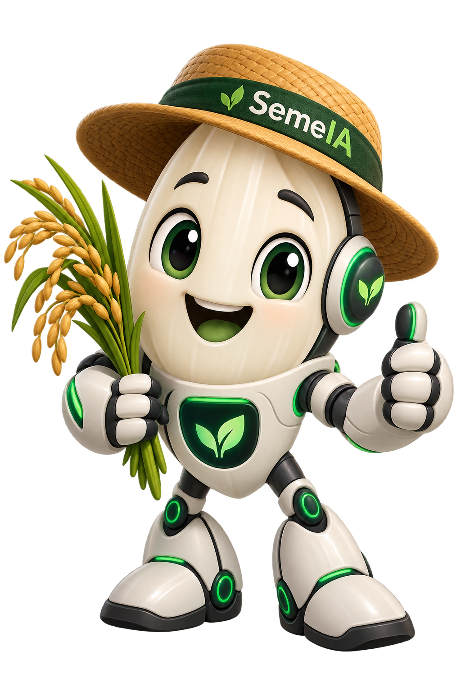

Sensores na lavoura
Leituras de umidade do solo, temperatura e registros de insumos aplicados ajudam a compor o histórico de cada área cultivada.
Uma proposta de sistema para produtores de arroz que reúne dados de sensores, geolocalização, mapa por quadras, custos da lavoura e projeções da safra em uma visão única.

variáveis principais acompanhadas por sensores
quadras na demonstração visual da lavoura
visão integrada para produção, custos e projeções
O conceito do SemeIA conecta dados agronômicos e financeiros para facilitar o acompanhamento da produção de arroz, independentemente do porte da propriedade.
Leituras de umidade do solo, temperatura e registros de insumos aplicados ajudam a compor o histórico de cada área cultivada.
A propriedade pode ser organizada em quadras geolocalizadas, com leitura visual da situação de cada ponto da lavoura.
O mapa permite situar as quadras cultivadas e relacionar cada ponto aos dados coletados no campo.
Insumos, horas trabalhadas e demais despesas informadas pelo produtor alimentam uma visão consolidada dos custos da safra.
O conceito prevê acesso pelo celular para acompanhar quadras, sensores, custos e alertas diretamente no campo.
Com dados de custos e produção estimada, o sistema pode apoiar simulações de custo total e resultado projetado.

O SemeIA foi pensado para organizar informações que normalmente ficam espalhadas em anotações, planilhas ou na experiência diária do produtor.
O mapa demonstrativo usa cores simples para indicar o estado de acompanhamento de cada área, facilitando a identificação de pontos que merecem atenção.
Exemplo visual para demonstrar como o produtor poderá identificar rapidamente situações diferentes dentro da propriedade.
Mockups conceituais mostram como o aplicativo poderá apresentar mapa, sensores, custos e projeções de forma rápida no celular.
Sensores distribuídos na lavoura enviam leituras de campo para a plataforma.
Os dados são associados às quadras e ao histórico de cada área plantada.
Mapa e painéis transformam as informações em indicadores fáceis de consultar.
O produtor cruza produção, custos e sinais de atenção para planejar as próximas ações.
O produtor poderá registrar despesas da safra para acompanhar custos e criar cenários de projeção antes da colheita.
Valores meramente ilustrativos para apresentação do conceito. Não representam recomendação financeira ou agronômica.
O projeto SemeIA busca aproximar tecnologia, gestão e rotina agrícola em uma experiência simples para pequenos, médios e grandes produtores, cooperativas e empresas agrícolas.
Conhecer o projetoCadastre seus dados e conte um pouco sobre sua propriedade. Nesta versão demonstrativa, o formulário apenas simula o envio no navegador.